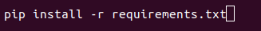
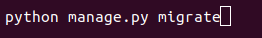
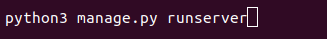
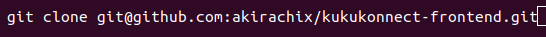
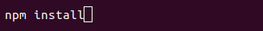
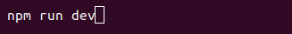
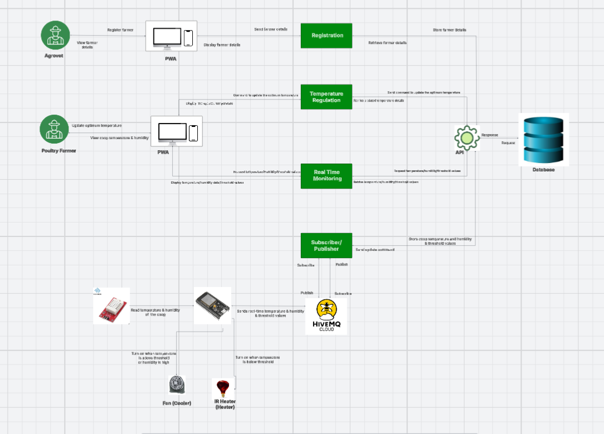
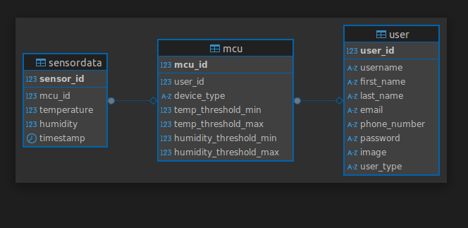

KukuKonnect Documentation
Version History
Version 1.0 is the initial documentation for KukuKonnect, a web-hosted IoT platform for Kenyan poultry farmers to monitor and regulate coop conditions (temperature, humidity) via a Progressive Web App (PWA). Covers setup, usage, database schema, deployment, QA process and API integration.It has a cloud-hosted Django backend, Next.js PWA frontend, and ESP32 IoT device. For proprietary details or custom endpoints, contact the development team.Overview
KukuKonnect is an IoT-enabled platform designed to empower Kenyan poultry farmers by monitoring and automatically regulating temperature and humidity in chicken coops. Using ESP32 microcontrollers and DHT22 sensors, it ensures optimal conditions to boost chicken survival rates, reduce losses, and enhance productivity. Farmers access data via a Progressive Web App (PWA) dashboard, with agrovets handling initial device registration and onboarding. This documentation provides end-to-end guidance for setup, operation, and maintenance of the KukuKonnect system, from hardware deployment to data visualization and API interactions.Key Features
- Real-Time Monitoring: Utilizes ESP32 microcontrollers with DHT22 sensors to provide live temperature and humidity data from poultry coops, displayed on a Progressive Web App (PWA).
- Automated Regulation: Triggers relays to activate fans or heaters when sensor data breaches farmer-defined thresholds, ensuring optimal coop conditions.
Getting Started
Prerequisites
- Hardware: ESP32 microcontroller, DHT22 sensor, relay modules for actuators (fans/heaters), power supply (5V USB or battery).
- Software: Next js (for frontend dev), Python 3.10+ (for backend), PostgreSQL 14+.
- Network: Stable Wi-Fi or 4G for IoT data transmission; Heroku/Vercel for hosting (as per deployment).
Installation/Setup
Hardware Assembly:
- Connect DHT22 to ESP32 (VCC to 3.3V, GND to GND, Data to GPIO4).
- Wire relays to GPIO5/18 for fan/heater control.
- Flash ESP32 with Arduino IDE using MQTT libraries (PubSubClient) for data publishing to broker (HiveMQ).
Backend:
- Clone repository
- Install dependencies 
- Run migrations 
- Run Server 

Frontend:
- Clone repository 
- Install dependencies 
- Run Server 
System Overview
System Architecture Diagram
Data Flow: Sensor → ESP32 → MQTT → Backend → PWA
Database
Type
PostgreSQL
Schema
- Users:Holds the users(farmers,Agrovets)details
- Sensor_data:The data that is being sent from the sensors(Temperature,Humidity)
- MCU:Description of the device properties
Entity Relationship Diagram
Frontend
Language and Frameworks
Language
- TypeScript: For type safety and scalability.
Frameworks
- Next.js: For server-side rendering and static site generation.
- Tailwind CSS: For responsive, utility-first styling.
Routing
- File-Based Routing: Defined in
/pages(/pages/dashboard.tsx) with dynamic routes.
Folder Structure
/src/components: Reusable UI elements (e.g.,RegistrationForm.tsx)./pages: Route-specific pages (e.g.,Dashboard.tsx,Catalog.tsx)./utils: API call logic./public: Images.
Testing
- Jest and ts-jest: Unit tests (e.g.,
test/components/RegistrationForm.test.tsx). - Run Tests:
npm test.
Deployment
- Platform: Vercel.
- Instructions:
- Install dependencies:
npm install. - Build project:
npm run build. - Deploy:
vercel --prodor push to GitHub repo linked to Vercel. - Verify at https://kukukonnect.vercel.app.
- Install dependencies:
Backend
Language and Frameworks
Language
- Python: For robust and scalable backend development.
Frameworks
- Django: High-level, secure web framework with built-in ORM and admin panel.
Routing
- URL Routing: Defined in
urls.py(e.g.,path('api/register/', views.register, name='register')) with dynamic routes.
Folder Structure
/kukukonnect-backend/kukukonnect: Main app directory/views: Business logic/models: Database models/serializers: Data serialization
/static: Static files (e.g., images).
Dependencies
- Django REST Framework (DRF): For building RESTful APIs.
Testing
- Django Test Framework: Unit tests (e.g.,
kukukonnect/tests.py). - Run Tests:
python manage.py test.
Deployment
- Platform: Heroku.
- Instructions:
- Install dependencies:
pip install -r requirements.txt. - Apply migrations:
python manage.py migrate. - Deploy: Use Heroku CLI with
git push heroku mainor connect GitHub repo. - Verify at https://kukukonnect-6aa0bdb81a64.herokuapp.com.
- Install dependencies:
API Documentation
Swagger UI provides interactive docs for the REST API, generated via OpenAPI spec.
Swagger UI: https://kukukonnect-6aa0bdb81a64.herokuapp.com/api/schema/swagger-ui/
Schema ReDoc: https://kukukonnect-6aa0bdb81a64.herokuapp.com/api/schema/redoc/
Postman Documentation: https://kukukonnect-6aa0bdb81a64.herokuapp.com/api/schema/redoc/
Deployment
Frontend Deployment
- Platform: Vercel
- Branch: Auto-deployment from main
- Environment Variables: Managed securely via .env in Vercel dashboard
- Build & Preview: Each push triggers preview builds for PRs and deploys on merge to main
Backend Deployment
- Platform: Django REST API deployed on Heroku
- Environment Variables: Configured in Heroku dashboard for security
- Scaling: Automatic scaling via Heroku dynos for increased demand
CI/CD Pipeline
- Tool: GitHub Actions
- Pre-Deployment: All codebases run tests, build, and lint checks before deploy
- Automation: Automatic deployment on merge to main
- Status: Build and test status visible in PRs and repository dashboard
Security
Authentication
- JWT: Token-based auth for API access.
Data Encryption
- HTTPS: TLS for transport.
- AES: Encrypts sensitive data (e.g., passwords).
Quality Assurance
Code Maintenance
- Branching: Use
mainfor production,developfor features,feature/*for tasks. - Commits: Follow Conventional Commits (e.g, feat: add registration form).
- Review: PRs require 5 approvals via GitHub.
- Pull Requests: Write clear summary for each PR.
QA Process
- Unit Tests: Jest for React and Pytest for Django (e.g.,
npm test). - Integration Tests: Postman for API (e.g.,
GET /api/users). - Manual Testing: Verify PWA form validation.
- CI/CD Checks: GitHub Actions runs tests, lints (ESLint), and deploys only on pass.
Glossary
- PWA: Progressive Web App for offline use.
- JWT: JSON Web Token for authentication.